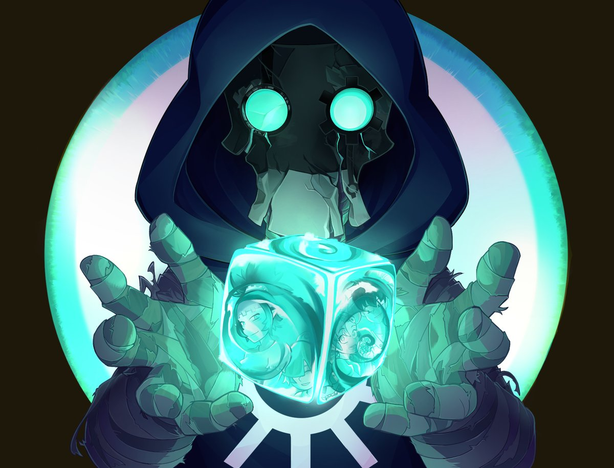

História de Wakfu
Wakfu faz parte do Krosmoz, um universo criado pela Ankama, uma empresa francesa de Roubaix. Ele existe em jogos, em quadrinhos e numa série animada.
Linha do tempo
- 2004: a Ankama lança o jogo online Dofus, que deu origem ao universo.
- 2008: estreia a série animada Wakfu, que conta a história de Yugo.
- 2012: lançamento do jogo Wakfu, um RPG tático online.
As datas das temporadas seguintes da série estão no site oficial da Ankama.

Yugo
É um Eliatrope, povo ligado ao Wakfu, a energia da vida. Foi criado por Joris, abre portais e quer descobrir quem são seus pais e de onde veio.

Nox
É um Xélor e domina o tempo. Na primeira temporada ele quer usar o poder do Eliacube e se torna o principal inimigo de Yugo.